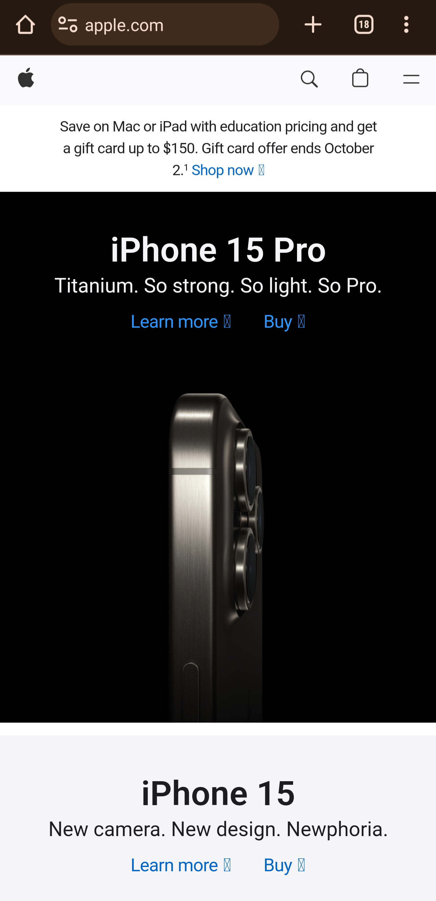
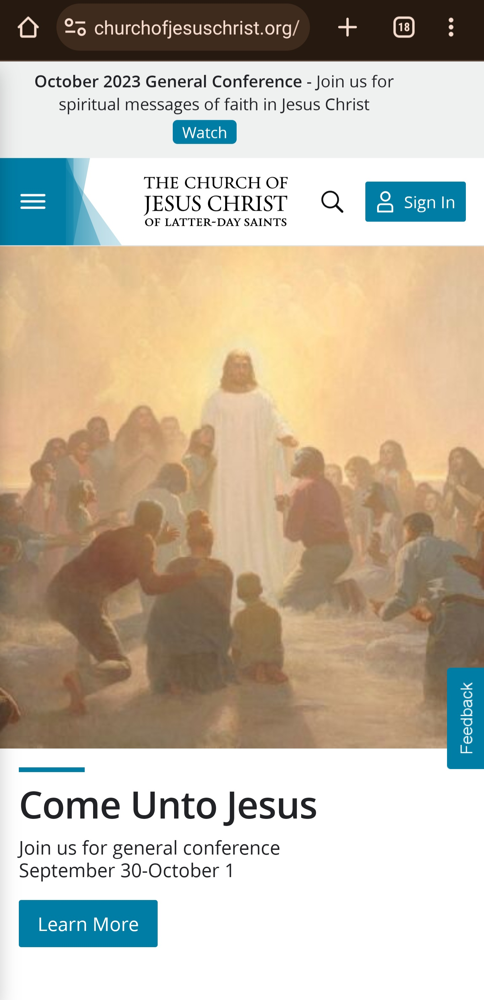
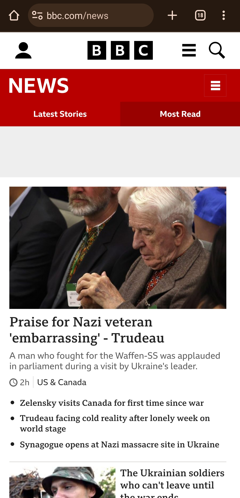

Apple

Apple's website has a clean and well-aligned design. Many elements on the website are centered, both horizontally and vertically. The centered alignment can create a balanced and symmetrical look, which is pleasing to the eye and makes it easy to see what the company wants you to see.
Church of Jesus Christ

I love the website because when you visit the website you will notice related contents are placed together on the page. The menu items are in close proximity to each other making it easier to find particular sections of the website. This makes it easier for me to find the information I need.
BBC

I like this website because it uses colors that are easier to see. It does not make it hard to see content. The page uses a red color and uses white-colored text on a red background. The main content text is black text on a white background. Makes everything easier to read and see.